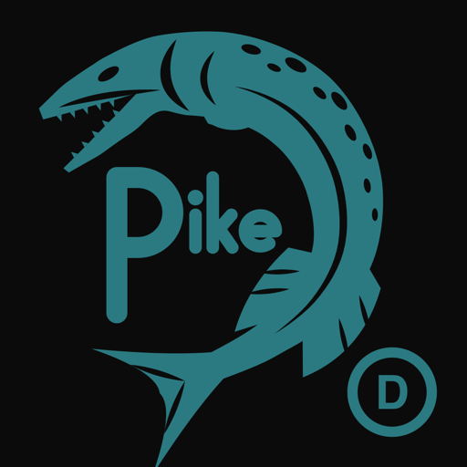

The app for predator anglers.
Bite index for pike, zander and perch, weather and air pressure at the water – and your catch log with lure box, logged in seconds. Your spots stay on your phone.

Bite index per species
Water temperature, time of day, light, wind and air pressure – for pike, zander, perch and more. It learns from your own trips.
Trips with route
Start a trip and PikeD records your way along the bank. Catches land in the right place automatically.
Catch log & lure box
Photo, species, lure – done. PikeD saves weather, water and water temperature by itself. And you see what is catching right now.
Water map
Lakes, rivers and canals from OpenStreetMap, offline for 11 countries. With your own spots, water photos and navigation.
Closed seasons & sizes
For all 16 German states. PikeD warns you when logging a catch that is protected or too small.
Made for the water
Big buttons, red-light mode for the night, 10 languages. No ads, no tracking.
Contact & help
Questions, bugs or ideas? Write to info@piked.app – or right in the app under More → Feedback.